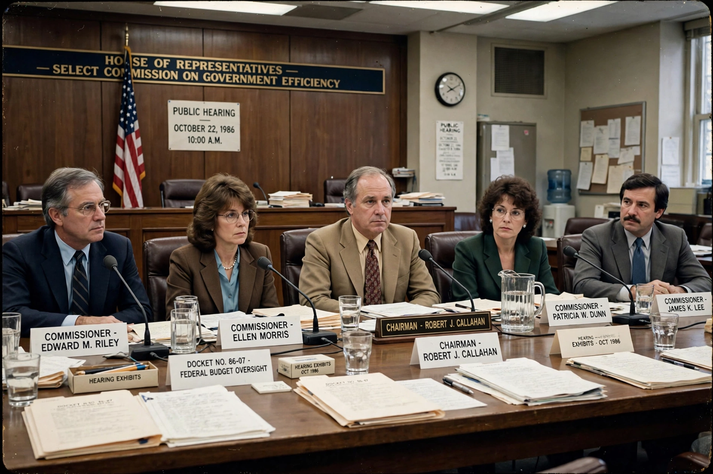

Rogers Commission
From Wikipedia, the free encyclopedia
| Rogers Commission | |
|---|---|
| Full name | Presidential Commission on the Space Shuttle Challenger Accident |
| Chair | William P. Rogers |
| Established | February 1986 |
| Report | 9 June 1986 |

The Commission in session.The Rogers Commission, formally the Presidential Commission on the Space Shuttle Challenger Accident, was appointed by President Ronald Reagan in February 1986 to investigate the loss of Challenger and its seven crew. Chaired by former Secretary of State William P. Rogers, its members included Neil Armstrong, Sally Ride, Chuck Yeager and physicist Richard Feynman.
The commission established that the disaster was caused by the failure of O-ring seals in the right solid rocket booster — rubber rings that lost resiliency in the cold of launch morning, letting hot gas burn through the joint. It found NASA's decision-making deeply flawed: engineers at contractor Morton Thiokol had argued against launching in such cold and were overruled under schedule pressure, in what the report called a broken safety culture.
Feynman's appendix
The report is famous for Feynman's personal appendix — appended only after he threatened to remove his name — which concluded with the sentence: "For a successful technology, reality must take precedence over public relations, for Nature cannot be fooled." Feynman had publicly demonstrated the O-ring's cold stiffness in a glass of ice water at a televised hearing, an experiment suggested to him by commissioner General Donald Kutyna and informed by quiet tips from inside NASA, including Sally Ride.
See also
Space Shuttle Challenger disaster · Richard Feynman · Morton Thiokol · Teacher in Space · Neil Armstrong